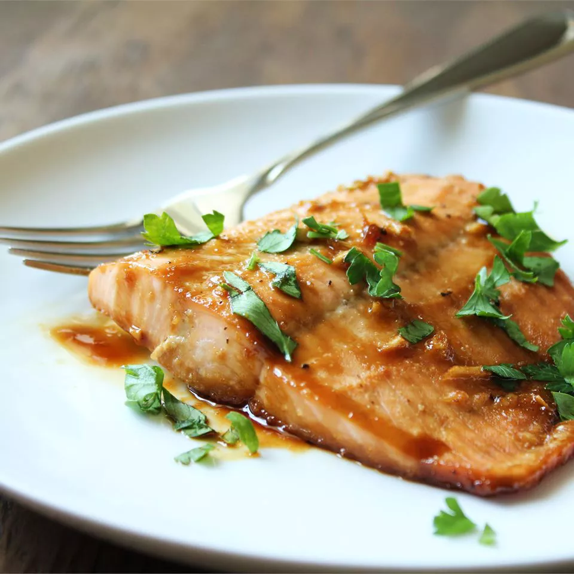

Maple Salmon

Description
This maple glazed salmon is delicious and very easy to prepare.
I love maple syrup in everything and decided to use it in the marinade.
Ingredients
- Syrup: Of course, you'll need maple syrup!
- Soy sauce: Salty soy sauce perfectly balances the sweetness of the maple syrup.
- Garlic: Fresh garlic adds bold flavor.
- Seasonings: This maple salmon is seasoned with garlic salt and black pepper.
- Salmon: This recipe works for a pound of salmon, which should make about four regular-sized fillets.
Steps
- Make the marinade and cut the salmon into fillets.
- Marinate in the fridge for at least 30 minutes.
- Bake in the preheated oven until the fish flakes easily.
Back